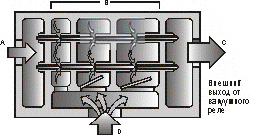
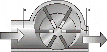
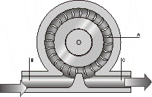
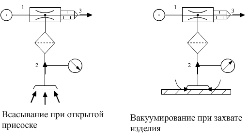

Принцип действия вакуумного эжектора
Компактные эжекторы. Многоступенчатые эжекторы. Принцип действия пластинчато-роторного вакуумного насоса Принцип действия вакуумного вентилятора Внимание! Принцип действия реле вакуума
Компактные эжекторы также являются одноступенчатыми, но они содержат два клапана для прямого управления функциями “захват” и “сдутие”. Эти эжекторы могут содержать вакуумные реле или систему индикации и настройки. При подключении вакуумного реле и распределителя к схвату можно задействовать функцию экономии сжатого воздуха, позволяющую отключать подачу воздуха, когда глубина вакуума, измеренная реле, больше установленного значения.
Достоинство компактных эжекторов в том, что они занимают мало места, имеют меньший вес, и при этом многофункциональны.
Кроме однокамерных эжекторов существуют многоступенчатые эжекторы, которые имеют несколько сопел Вентури, выстроенных в цепочку. Эти эжекторы имеют более высокую мощность вакуумирования по сравнению с одноступенчатыми эжекторами.

Вакуумный насос представляет собой цилиндр, в котором эксцентрично расположена крыльчатка с подвижными лопатками. При вращении крыльчатки лопасти под действием центробежной силы прижимаются к стенке цилиндра. Объём полости В при вращении крыльчатки увеличивается, что приводит к втягиванию воздуха в эту полость, а объём полости С уменьшается, и воздух выталкивается.

В вакуумном вентиляторе вращающиеся лопасти (А) втягивают воздух извне, придают ему ускорению и сжимают. Это означает, что кинетическая энергия передаётся от крыльчатки к воздуху. При втягивании воздуха лопастями вакуум создаётся во входном пространстве В. Сжатый воздух покидает вентилятор через выход С.
Вакуумные вентиляторы дают большую скорость вакуумирования, но глубина вакуума меньше, чем у вакуумных насосов и эжекторов.

Скорость вакуумирования всех вакуумных генераторов указывается в л/мин. или м3/час при давлении 1000 мбар и температуре 20 град. С.

Вакуумные реле бывают механическими, пневматическими, электрическими и электронными.
В механических, пневматических и электрических вакуумных реле изменение давления воздействует на диафрагму , которая воздействует на механический переключатель, золотник распределителя или электрические контакты.
В электронных реле воздух воздействует на пьезорезистивный датчик, формирующий электрический сигнал, зависящий от давления. Электронная схема сравнивает полученный аналоговый сигнал с предустановленным и формирует дискретный выходной сигнал. Электронная схема может формировать аналоговый выходной сигнал с требуемыми параметрами пропорционально давлению. Вакуумные реле могут использоваться для наблюдения и управления процессом. Большинство вакуумных реле позволяют установить точку срабатывания, а некоторые ещё и гистерезис